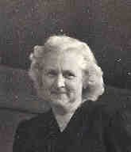

 Mercedes Catherine GREENEWALD (1889-1981) |
Mercedes Catherine GREENEWALD
• Census: 1920, 12 Jan 1920, Pittsburgh, Allegheny, PA. 6 • Census: 1930, 2 Apr 1930, Los Angeles, Los Angeles, CA. 1 Mercedes married Anthony George STARK, son of Anton STARK and Agnes KUNDT, about 1914.1 (Anthony George STARK was born on 3 Sep 1891 in Pittsburgh, Allegheny, PA,3 4 7 8 died on 5 May 1948 in California, USA 3 4 8 and was buried in Holy Cross Cemetery, Culver City, Los Angles, CA 5.) |
1 California, Los Angeles County, 1930 U.S. Census, Population Schedule (Washington, D.C., National Archives and Records Administration), ED 19-672, Sheet 9, Line 32.
2 Social Security Administration, Death Master File (http://www.ancestry.com/search/rectype/vital/ssdi/main.htm).
3 Funeral Home, Mass Card (Obtained from Rosemary (Weet) Hoey).
4 Loretta Stark Pollock, Letter to Rosemary Hoey (CA, 1997).
5 Mercedes Stark Compton, Letter to James and Rosemary Hoey (14 Feb 1981).
6 Pennsylvania, Allegheny County, 1920 U.S. Census, Population Schedule (Washington, D.C., National Archives and Records Administration), ED 612, Sheet 10, Line 13.
7 National Archives and Records Administration., World War I Selective Service System Draft Registration Cards, 1917-1918 (Washington, D.C.).
8 California Department of Health Services, Center for Health Statistics, California, Death Index, 1940-1997 (Sacramento, CA (via Ancestry.com)).